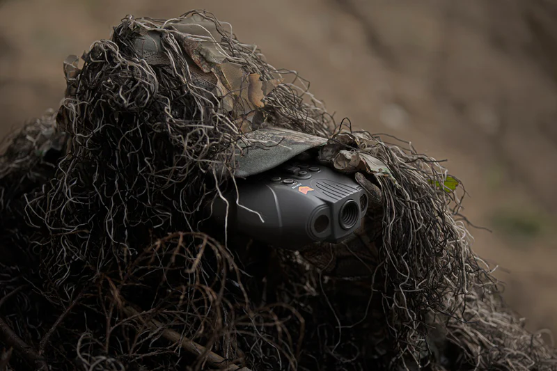

This site is about Flashlights. Here is one cool fact: Digital Night Vision needs an IR flashlight to work.
This is the cheap mans Night Vision the alternative is about $8,000, that being Thermal Imaging.
Digital Night Vision struggles in low light conditions, so it uses a infrared flahlight to illuminate.
Unfortunately it sucks in complete darkness.
Random IR set